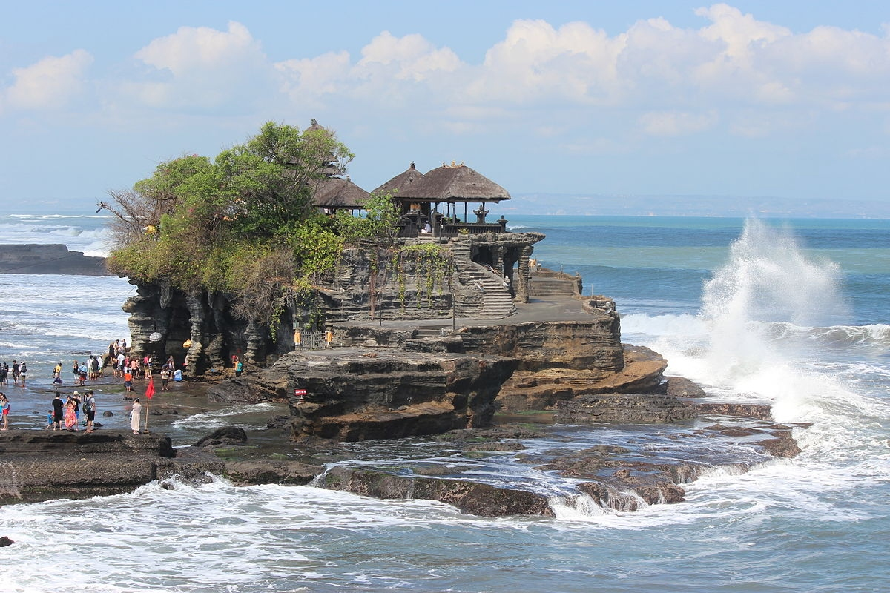
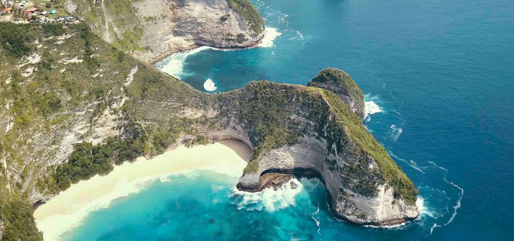

Pantai Kuta

sumber: gotravela indonesia
Pantai pasir putih yang terkenal dengan ombaknya yang cocok untuk peselancar pemula dan pemandangan matahari terbenam yang spektakuler. Lokasinya sangat strategis dan dekat dengan bandara.
📍 Desa Kuta, Kecamatan Kuta, Kabupaten Badung, Bali
🕒 24 Jam (Kawasan pantai umum)Tanah Lot
sumber: wikipedia.org
Pura laut ikonik yang terletak di atas batu karang besar di tepi laut. Terkenal sebagai tempat terbaik untuk menyaksikan matahari terbenam dengan siluet pura yang menakjubkan.
📍 Jalan Raya Tanah Lot, Beraban, Kediri, Kabupaten Tabanan, Bali
🕒 Setiap Hari: Umumnya 06.00 - 19.00 WITANusa Penida
sumber: nusapenida.org
Sebuah pulau di tenggara Bali yang menawarkan keindahan tebing karang, pantai tersembunyi (seperti Kelingking Beach dan Broken Beach), serta spot snorkeling dan diving yang luar biasa.
📍 Kecamatan Nusa Penida, Kabupaten Klungkung, Bali
🕒 24 Jam (Kawasan pulau, jam buka destinasi spesifik berbeda-beda)
Info Terbaru Bandung:
Wisata dan Kuliner
Contact Us!
+62-123-4567-890 email@address.com
Wisata dan Kuliner
Contact Us!
+62-123-4567-890 email@address.com